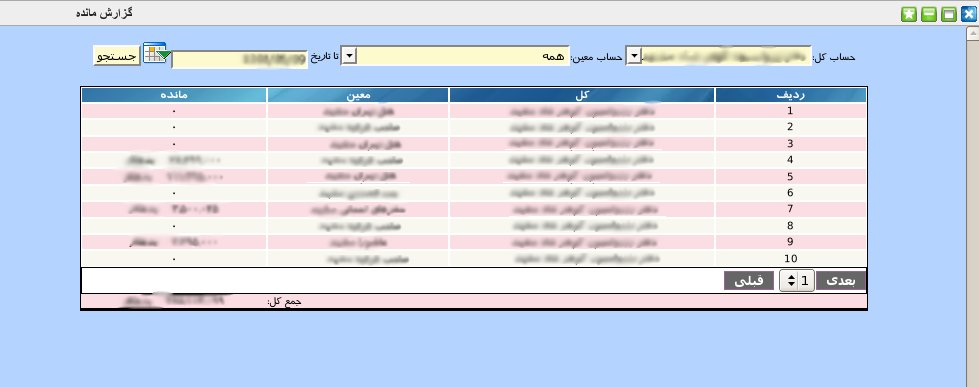

۱-گزارش مانده
گزارشگیری از مانده حساب ها یکی از پرکاربردترین گزارش های مورد نیاز حسابداران می باشد. این پنل امکان گزارشگیری از حساب های مجموعه تا تاریخی خاص را برای کاربر فراهم می کند.

برای گزارشگیری ابتدا حساب کل سپس حساب معین را انتخاب نموده و تاریخی که می خواهید گزارش تا آن تاریخ باشد را از تقویم تعبیه شده انتخاب سپس بر روی دکمه جستجو کلیک نمایید.